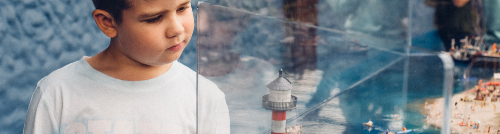
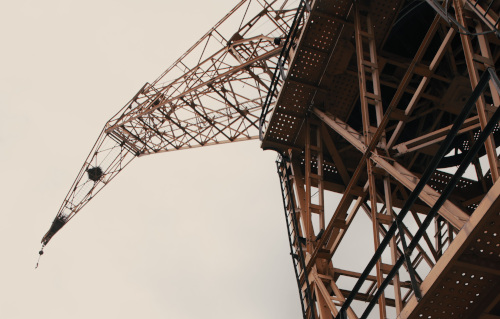
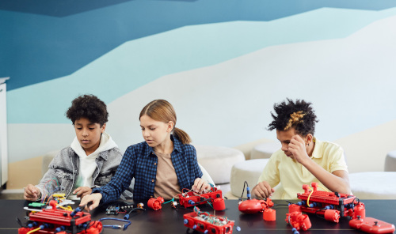

Buy TicketsFamily Activities
Get ready to build, explore, solve, and create together! Our family activities are designed to spark curiosity and encourage teamwork through hands-on challenges inspired by Fredrikstad's shipbuilding heritage.
Whether you're building your first ship, solving clues around the museum, taking on exciting engineering challenges, or imagining the ships of tomorrow, there's something for every young explorer and their family. Learn through play, discover how great ideas become reality, and make lasting memories together at the museum.
Shipbuilders for a day
Families become shipbuilding teams for a day.
Recommended ages: 4-12 years
Duration: 45 minutes
When finished every member takes home a certificate
as “Junior Shipbuilders” that gives bragging rights at family gatherings.

Family Shipyard Challenge
Families recieve a mission inspired by real work at Fredrikstad Mekaniske Verksted.
Recommended ages: 6-14 years
Duration: 60 minutes
Each completes station earns a stamp in your Shipyard Passport!
Treasure Hunt: Secrets of the Shipyard
An interactive museum-wide scavenger hunt where families solve clues based on the museums exhibitions.
Recommended ages: 5-12 years
Duration: 45-75 minutes
The final clue unlocks the Captains chest - come find your treasure!

Invent the Ship of the Future
Inspired by FMVs inovative ship designs, families work together to imagine
the next generation of ships using LEGO.
Recommended ages: 7-15 years
Duration: 60-90 minutes